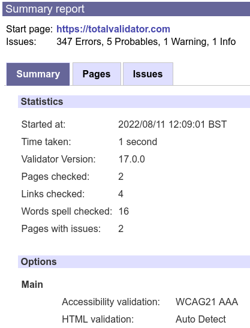
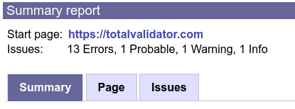
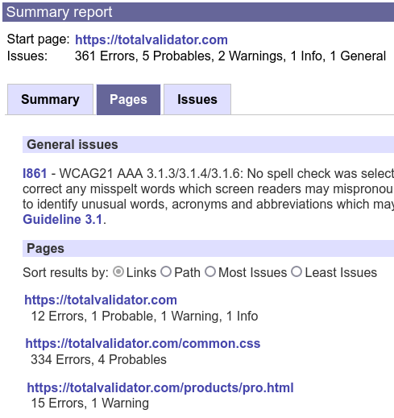
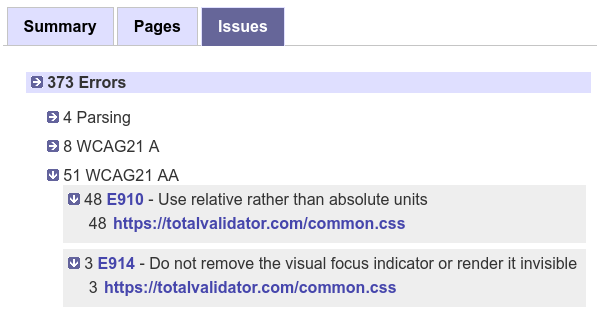
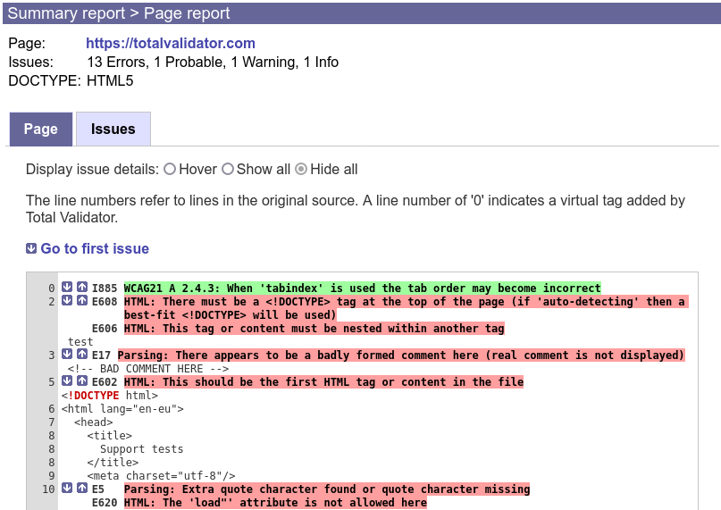
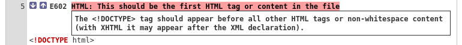
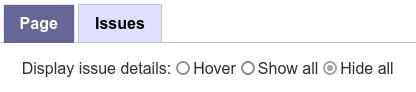
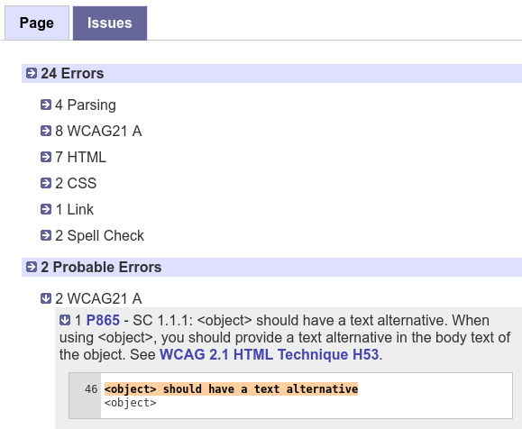
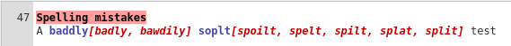

Documentation > Reports
This page describes the latest reports and not the old (pre 17.0) reports.
Total Validator reports are standard web pages that can be read by any web browser. Two types of web page are used; a Summary report containing an overview of the test, and Page reports for each page validated.
All the reports are stored in a folder called Results and are normally overwritten each time you run a test. The location of this folder
is displayed in the Help > About menu and is normally within your Documents folder.
With the Pro version, you can change the name and location of these files using the Save to and Unique report options
Summary report page
At the top is a link to the first page tested and the totals of all the issues found across all the pages tested. Below this up to three tabs may appear containing the results.
The Summary tab contains brief statistics about the test, together with a list of all the options that were used:

One page report
If only one page is validated (always the case for Test and Basic), the Page tab and Issues tab from the Page report are displayed to create a one page report. See the Page report for further details.

Pages tab (Pro only)
If more than one page was validated a Pages tab is used, listing of the pages validated together with a count of the issues for each. If there are any general issues affecting the overall test, these will appear before this list:

You can sort the list of pages by Links (the order in which the pages were tested), by Path
(alphabetic order), or by Most or Least number of issues.
Each page URL displayed is a link to a Page report containing the detailed results for that page.
Issues tab (Pro only)
The issues tab contains a list of all the issues found across all the pages validated, broken down into the various types of issue. Clicking the arrows or text next to each subsection reveals the summary for each issue and links to the Page report for each page they were found on:

For each issue type like Errors, you can expand or collapse all the subsections at once, by clicking its arrow or title.
Page report
At the top is a link to the page tested and the totals of all the issues found with this page. Below this up to two tabs may appear containing the results.
Page tab
The Page tab contains a formatted representation of the page with issues highlighted before each affected line. This makes it easier to understand the context of each issue and how to resolve it, especially when several issues are caused by one fault, such as a missing or misplaced tag.

The line numbers refer to lines in the original source so you can quickly get to and amend the issue in the original source.
Line numbers marked as 0 refer to tags added by Total Validator. These may be optional tags that are implicit in the standards, or virtual tags used to display issues affecting the whole page.
There are arrows next to each issue to allow you to quickly navigate to other issues on the page. When you hover over an issue more detailed information about it will appear:

Instead of hovering, you can always display these details, or always hide them, using the Display issue details option:

You can then click the issue text instead of hovering over it to toggle the details. With the Pro version you can set the default value for this in advance.
Issues tab
The issues tab contains a list of all the issues on the page, broken down into the various types of issue. Clicking the arrows or text next to each subsection reveals detailed information about each issue together with the line it was found on, and you can expand or collapse all the subsections at once:

As well as providing a count of each issue, which may help to decide which ones to address first, this provides a more concise view of the issues, as an alternative to the Page tab.
Spelling mistakes
Potential spelling mistakes are dealt with as shown in the image below. The word that is not recognised is highlighted and followed by a list of suggested replacements:

Note that the line number refers to the first line of the content containing the spelling mistake. If the content spans multiple lines it may not match the line with the mistake on.
When the Pro version is running, you can click on words it to add them to your own personal dictionary so they don't appear in future. For convenience, doing this will also remove the highlighting of the word from all the current page reports, and the link disabled.
Note that ad-blocking extensions and firewalls can prevent spell check corrections from being sent to the Pro application, so you may need to disable these on report pages.